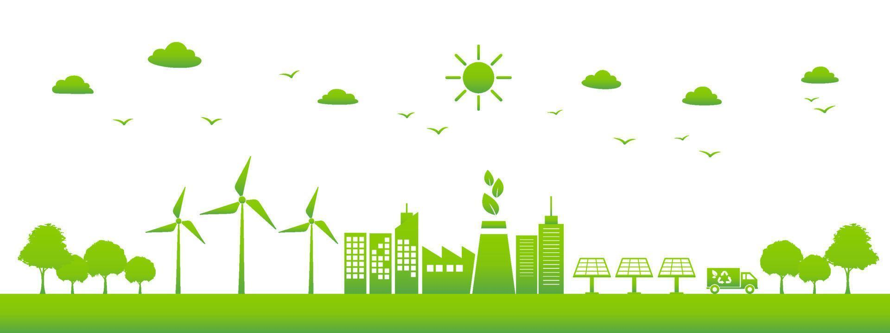
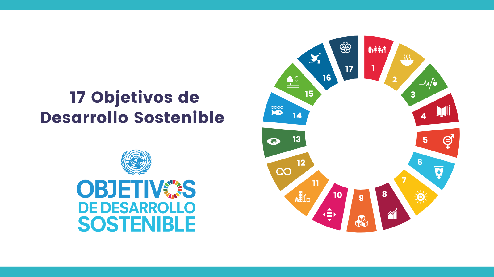

¿Qué es la sostenibilidad y qué papel juega en el sector tecnológico actual?
La sostenibilidad es la capacidad de satisfacer las necesidades presentes sin comprometer los recursos de las generaciones futuras, y en el sector tecnológico actual juega un papel clave al impulsar prácticas que reducen el impacto ambiental, como el uso de energías renovables, la eficiencia energética en centros de datos y dispositivos, y el diseño para reutilización y reciclaje, además de fomentar innovaciones como la inteligencia artificial y el análisis de datos que ayudan a optimizar recursos y a enfrentar desafíos ambientales y sociales.
¿Qué dimensiones abarca (ambiental, social, económica)?
La sostenibilidad abarca tres dimensiones interrelacionadas:
Ambiental: Se centra en proteger los ecosistemas, reducir la contaminación y usar responsablemente los recursos naturales.
Social: Busca garantizar bienestar, justicia, igualdad de oportunidades y condiciones de vida dignas para las personas.
Económica*: Promueve un desarrollo capaz de generar valor y crecimiento sin deteriorar el entorno ni comprometer la estabilidad futura.
¿Qué son los aspectos ASG y por qué deben interesar a una empresa tecnológica?
Los aspectos ASG (Ambientales, Sociales y de Gobernanza) son criterios que evalúan cómo una empresa gestiona su impacto en el medio ambiente, su responsabilidad hacia las personas y su transparencia y ética en la toma de decisiones, y deben interesar especialmente a una empresa tecnológica porque influyen en su reputación, su capacidad de atraer inversión, el cumplimiento normativo, la reducción de riesgos operativos, el acceso a clientes que exigen prácticas responsables y la competitividad en un mercado donde la sostenibilidad se ha convertido en un factor clave de innovación y valor.
¿Qué marcos internacionales impulsan la sostenibilidad (Agenda 2030, ODS)?
La sostenibilidad está impulsada por marcos internacionales como la Agenda 2030 de las Naciones Unidas, un plan global que orienta a países y organizaciones hacia un desarrollo equilibrado, y los Objetivos de Desarrollo Sostenible (ODS), un conjunto de 17 metas que abordan desafíos como el cambio climático, la igualdad social, la innovación responsable y la gestión eficiente de los recursos, los cuales sirven como referencia para que los gobiernos, las empresas y la sociedad adopten estrategias alineadas con un desarrollo más responsable y sostenible. Esas metas son:
Fin de la pobreza
Hambre cero
Salud y bienestar
Educación de calidad
Igualdad de género
Agua limpia y saneamiento
Energía asequible y no contaminante
Trabajo decente y crecimiento económico
Industria, innovación e infraestructura
Reducción de las desigualdades
Ciudades y comunidades sostenibles
Producción y consumo responsables
Acción por el clima
Vida submarina
Vida de ecosistemas terrestres
Paz, justicia e instituciones sólidas
* Alianzas para lograr los objetivos

¿Qué tres ODS están más relacionados con la informática o el desarrollo de software?
Tres ODS especialmente relacionados con la informática y el desarrollo de software son:
|Num|ODS|Relación con informática/desarrollo de software|
|---|---|-----------------------------------------------|
| 4 |Educación de calidad|Fomenta habilidades digitales y acceso a la educación tecnológica|
| 9 |Industria, innovación e infraestructura|Impulsa la innovación tecnológica, infraestructura digital y desarrollo de software|
| 12 |Producción y consumo responsables|Promueve el desarrollo de software eficiente y la gestión sostenible de recursos tecnológicos|